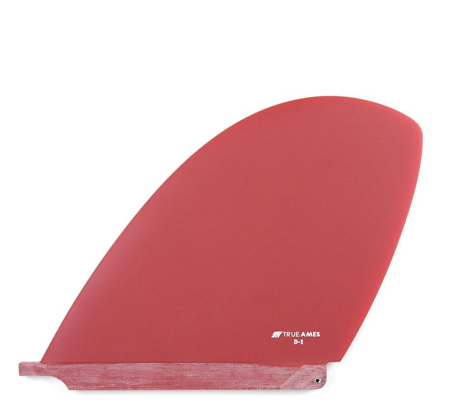

Single Fins
Greenough 4a
California Classic
Herritage
D-Fin
Originally popular as glass-ons in the 1960's, now "D” fins sometimes need to be put in fin boxes, so we have made 2 designs to pick from. The larger area on these fins allows for harder turning and easier nose riding. Try one on your log and take a trip to the past.
The D-1 is 8.5” deep and has a 9.5” base. It is more old school, yet has a very pleasing shape.
The fin will just fit in the 10” standard fin box because we have made an overhang in the rear of the fin.

Sizes:
8.5"
E-Glass:
E-glass has excellent flex characteristics and performance longevity, while featuring the bonus of outstanding color vibrancy that allows for the variety of colors we offer.
Made in Santa Barbara